COD ZOMBIES
Todo empieza aqui
Call of duty es una franquicia centrada en juegos tipo shooter en primera persona el primer juego fue lanzado en 2003 conocido como simplemente call of duty

El cual es creado por la compañia llamada ACTIVISION, estos juegos tratan de conflictos belicos pero cada juego tiene su tematica ya sea desde la segunda guerra mundial hasta un futuro donde la guerra es contra maquinas reveldes, pero la modalidad de la que hablamos empieza en 2008 con la salida de Call of duty: world at war
En este juego fue introducido por primera vez la modalidad de zombies (fue incluido por un desarrollador aburrido) en modalidad de recompensa ya que este modo se desbloqueaba en el momento de completar la campaña principal y en la pantalla de repetir mision aparecia una nueva mision con el nombre de NAZI ZOMBIES
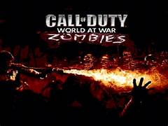Call of Duty: World at War
Como se comento este modo en un inicio no estaba planeado pero uno de los desarrolladores tomo algunos modelos de multijugador y cambio codigos y asi fue creado nazi zombies donde conocimos nacht der untoten lo que significa noche de los muertos vivientes en aleman el mapa es una casa localizada en alemania, despues metieron DLC's (contenido descargable) los cuales eran paquetes de mapas con Verruckt el cual era un manicomnio tambien en alemania y la traduccion al español es loco, shi no numa un pantano localizado en japon su traduccion del Japones al Español es ciudad en el pantano y el ultimo mapa Der Riese el cual es un laboratorio aleman donde llevaban a cabo sus experimentos su traduccion es La razón
 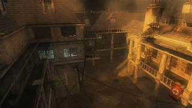
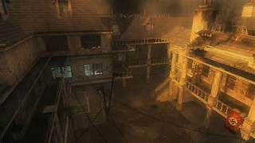


Call of Duty: black ops
Pasamos a 2010 a la salida de call of duty black ops un juego hambientado en la guerra fria este juego ya tenia la modalidad de zombies por defecto el cual venia con el magnifico Kino der untoten traducido al español es cine de los muertos vivientes como el nombre lo sugiere un es cine XD, Five un mapa el cual a nadie y digo nadie le gusta esta basado en el pentagono, shangri-la el cual es un templo antiguo en japon, moon un mapa donde empiezas en el area 51 y terminas en la luna explotando la tierra momento XD, ascension el cual es una base de lanzamientos de cohetes en el cual llego la invasion zombie, casi olvido call of the dead el cual en la historia empezo por un proyecto de una pelicula zombie pero termino siendo una invasion zombie real con esto concluimos con black ops y pasamos con el siguiente de la franquicia y el siguiente juego.
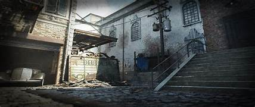
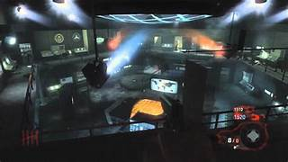
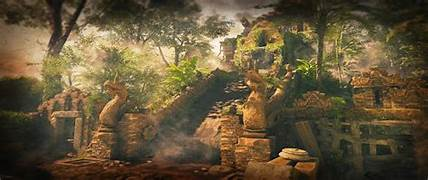
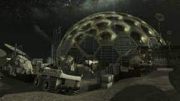
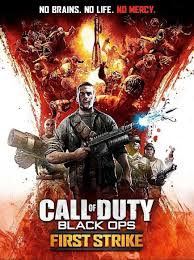
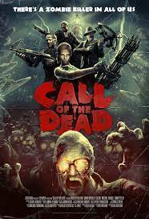
Como dato extra en este call of duty black ops tenia un sub modo conocido como dead ops arcade el cual era como jugar en una maquina retro.
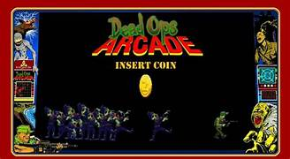Call of Duty: black ops 2
Viajamos a 2012 en este año sobrevivimos a otro fin del mundo estaba de moda maluma y se anuncio un nuevo juego de ACTIVISION una secuela de la entrega del 2010 estamos hablando de call of duty black ops 2 un juego el cual su campaña convinaba una persecucion de un terrorista en el futuro y finales de la guerra fria pero tanto en el futuro y el pasado perseguias al mismo sujeto llamado Menendez y su modalidad en zombies se le ocurre darnos tranzit un mapa en el mismo estado que five, a nadie le gusto, nuketown un mapa de multijugador adaptado a zombies, die rise un mapa ambientado en departamentos chinos pero es un mapa de parkour, buried un mapa donde empiezas en una fabrica para caer en un abujero y descubrir un pueblo vaquero enterrado, mob of the dead que tan tenebroso es una pricion? pues mob of the dead nos da la respuesta poniendo algunos cuerpos al estilo sinaloa rituales satanicos y sin mencionar que al iniciar la partida empiezas muerto en un modo llamado afterlife el cual es como estar en un limbo, origins que decir de origins? es un señor mapa es el que nos ayudo a comprender un poco mas de la historia aparte fue el primer mapa que yo juge entonces como no tenerle amor a origins aparte es un mapa que te ambienta en la primera guerra mundial favorito.
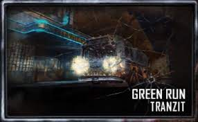 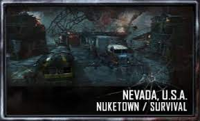 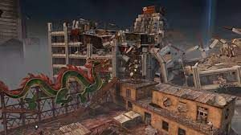 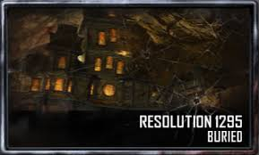 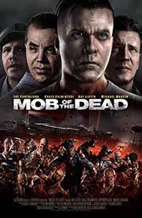 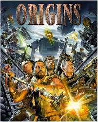Hasta aqui estamos hablando de los call of duty que eh jugado hasta la fecha a continuacion pondre el orden de como categoraria del mejor al peor mapa dde zombies de los que eh jugado.
Top 10 los mejores mapas de zombies
- 1° Origins (call of duty: black ops 2)
- 2° Mob of the dead (call of duty black ops 2)
- 3° Kino der untoten (call of duty black ops)
- 4° Nacht der untoten (call of duty World at War)
- 5° Moon (call of duty black ops)
- 6° Der riese (call of duty World at War
- 7° Buried (call of duty black ops 2)
- 8° Nuketown (call of duty black ops 2)
- 9° Assension (call of duty black ops)
- 10° Tranzit (call of duty black ops 2)
al gunos links de informacion extra como la historia de zombies o easter eggs
La historia del aether (iLion)
como hacer el easter egg de mob of the dead (Juggerwicho)
teoria de mob of the dead (Juggerwicho)
como armar los bastones de origins (Lalogri)
Mis 10 Armas Especiales Favoritas de Call of Duty Zombies (Lalogri)
TOP 5 "LOS MAPAS MÁS FÁCILES DE CALL OF DUTY ZOMBIES" (ElGamingChannel)
intentando speedrunear shadows of evil (TheSned)
Mapa para pasarla de chill con los amigos
No cabe duda que en el universo zombies de call of duty existen una cantidad impresionante de mapas pero en mi opinion personal los mapas para jugar tranquilamente con los amigos seria la ciudad ya que solo hay dos ubicaciones de la caja misteriosa y los lugares para campear ya que el campeo aumenta la facilidad, Kino der untoten en este mapa es facil subir de ronda tanto solo como con amigos ya que hacer tren de zombies lo que es hacerlos bola es facil en la parte del ecenario y tambien entra en el top shangrila ya que solo aparecen 24 zombies por ronda no importa en que ronda vallan.